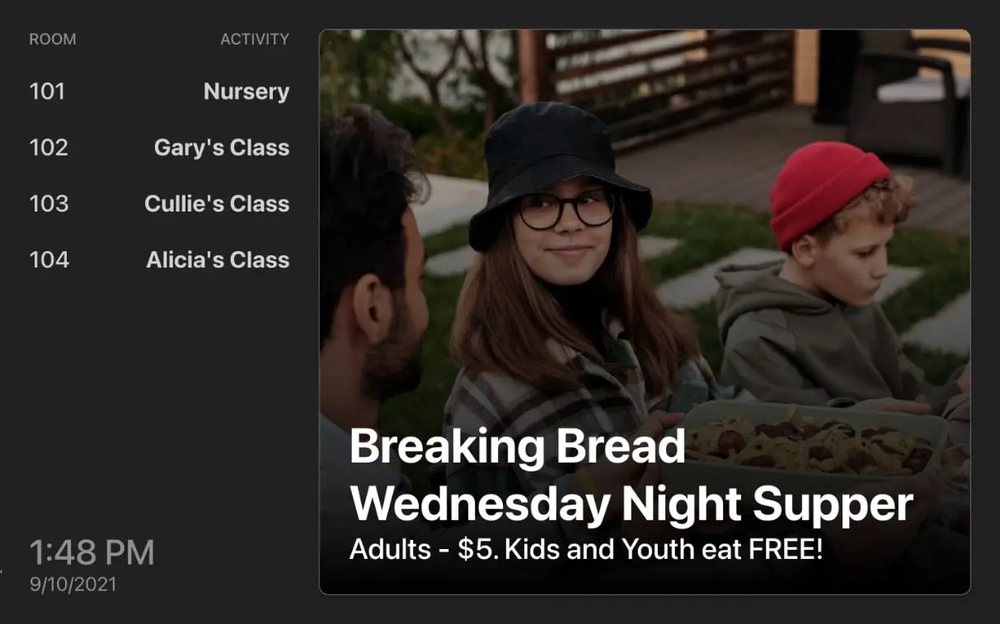

Overview
A Local religious organization is seeking to redesign and restructure their information screens that are displayed throughout their building.
Problem
Since the client was using the same CMS that manages their website to update their
information screens, they couldn’t
make real-time updates. This meant that screens had to be refreshed in order to
display the latest content.
An image slider was used to display content. This required a designer to create a
separate image for every new
announcement or piece of content that needed to be added. Although this is not
difficult to achieve, they did not have
the proper staff to create and maintain the images needed to meet the demand of
incoming updates.
Desired Outcome
The client wanted a way for someone to quickly and easily update the content on their information screens without needing any design skills or knowledge. They also needed an update to their system as quickly as possible, as they had a large upcoming event, and wanted to have the new system ready for then
Solution
Based on my experience with using React.js for developing web-apps, and Google Firebase’s Firestore for making real-time updates, I thought that implementing these features would make a great solution for a quick expedition of the final product.
Future Development
The client is open to working together again on this project in the future, in order to add more features and quality-of-life improvements. These possibilities include using the Pexels API for finding images within the application and edit feature.